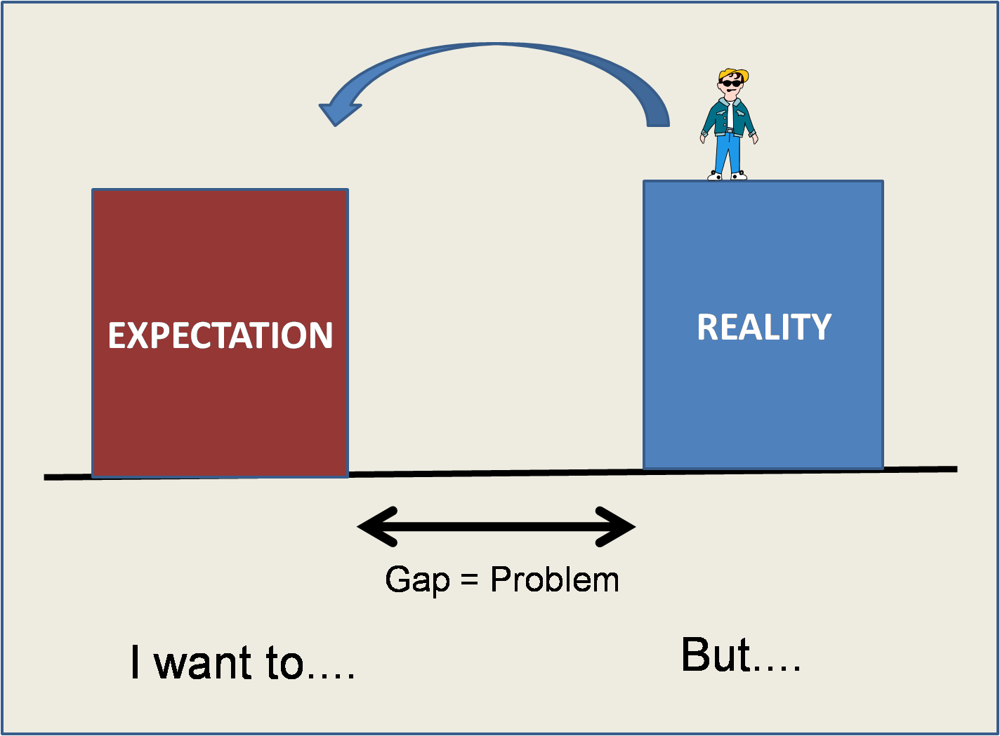

Definir El Problema
“La arquitectura es un producto de una actividad llamada diseño, y no hay diseño sin un problema. La definición de un problema es una declaración explícita y escrita de un problema: la brecha entre el estado actual y el estado deseado”
– James O. Coplien Lean Architecture: for Agile Software Development
Me gusta esta definición de problema: “la brecha entre el estado actual y el estado deseado”. Lo que hacemos al resolver un problema es cambiar una situación, normalmente molesta. O satisfacer una necesidad.

Por esto que es importante saber y definir adecuadamente cuál es el problema. Si lo entendemos como acortar una brecha es más fácil llegar a enunciar y entender el problema. Veamos, a modo de ejemplo, este diálogo con unos desarrolladores, tomado del libro de Coplien que citamos arriba:
– ¿Cuál es el problema que están resolviendo?
– Estamos tratando de llegar a ser más orientados al objeto.
– No, esa es una solución al problema, no un problema. ¿Cuál problema están resolviendo?
– Oh, estamos usando la orientación a objetos para obtener una mejor reutilización.
– No, reutilización es en si misma una solución a un problema. ¿Cuál problema están resolviendo?
–Bien, el último proyecto fue demasiado costoso, y estamos tratando de reducir nuestros costos.
– ¿Cuantas alternativas han considerado?
– Bueno, ninguna. Todos los demás están usando objetos, así que decidimos tomar un camino de bajo riesgo.1
De seguro que podrán identificar alguna organización en la que han trabajado. Es un síntoma clásico de la poca claridad del propósito de la labor de ingeniería de software.
Se trata de una falta de reflexión sobre el sentido, la orientación del trabajo. En algunos casos toma la forma de la Ley de Prodan: “No se lo que quiero, pero ¡lo quiero ya!”.
Yo digo que ahí falla la dirección, la que define la visión inicial, y los objetivos subordinados a esa visión. Recordemos lo dicho sobre Dirección, Organización y Método, cuando planteamos una visión debemos definir el resultado, el plazo u oportunidad y los parámetros de calidad.
Antes de empezar a resolver un problema y de incluso definir estos tres elementos, debemos tener claro qué queremos resolver, pero sobre todo para qué. Eso es lo que llamamos propósito. Una buena definición del problema permite aclarar ese propósito.
Muchos problemas surgen de la conversación del día a día. Me pasó recientemente, una aplicación entregaba feedback sobre errores, pero no con el suficiente detalle para que el usuario pudiera realizar la correcciones. Estamos trabajando en la implementación de una lista de nuevos requerimientos, pero en esta lista no estaba considerado el hecho de que se necesitaba un mejor detalle al entregar los errores. Ese problema sólo surgió de la interacción durante unas pruebas. Fue mediante esa interacción que pudimos levantar un nuevo requerimiento.
Este caso es la típica situación en que se revela que hay una diferencia
entre lo que el usuario pide y lo que el usuario
espera.
Y eso se descubre mediante la identificación de la brecha entre la
situación actual y la deseada, eso es una expectativa. Lo malo, y de ahí
viene el arte, es que las expectativas no siempre son enunciadas, porque
en la mayoría de los casos es difícil expresarlas en palabras. Esta
situación es la que produce uno de los hechos más frecuentes en la vida
de los proyectos: “el requerimiento emergente”. Y digo hecho, no
problema. Hay personas que consideran al “requerimiento emergente”
como un problema, no lo es, el problema es creer que uno debe tener
todos los requerimientos claros antes de comenzar. “Espera lo
inesperado” debería ser la consigna de un buen administrador de
proyectos. En la literatura ágil se habla de que lo que pasa es que
vamos descubriendo nuevos problemas en el camino, no es eso, lo que pasa
que el acto de diseñar en realidad crea nuevos problemas, es más en
muchos casos el diseño cambia la propia naturaleza del problema. Por eso
que debemos revisitar nuestra definición del problema siempre.
Una buena definición del problema es vital, nos ayuda a enfocarnos, y por supuesto, a guiar nuestra labor de gestión del proyecto. Pero ¿cómo lograr una buena definición? Acá viene la mala noticia para nuestros amigos ingenieros del tipo aspergueriano: “la mejor manera de definir un problema es conversando”.
Equipo
A mi jefe le gusta la definición de que un equipo es un “conjunto de conversaciones recurrentes”, y los que resuelven el problema son los miembros del equipo. ¿Quiénes son los miembros del equipo? Los clientes, los usuarios, los desarrolladores, los ingenieros de sistemas, etc. Pensar que el equipo sólo lo componen los desarrolladores es uno de los mayores errores que se puede cometer. Todos deben estar involucrados en la solución del problema. Otra vez, algunos verán que esto de conversar es una pérdida de tiempo, pero en realidad es tiempo bien invertido.
La propiedad del problema
Una cosa importante antes de continuar, es necesario identificar la propiedad del problema. Este concepto tan simple es normalmente mal abordado y lleva a problemas en la ejecución del problema. Lo importante, es que cualquiera sea la respuesta a la pregunta “¿quién es el dueño del problema?” debe siempre considerar y respetar a las personas con el poder de resolver el problema.
“Es frecuente en la vida que una persona formula el problema y lo delega a otra para que lo resuelva. Le pides a tu secretaria que se deshaga del vendedor. Tu jefe te pide que recortes tu presupuesto en un 15%. Un cliente te pide que arregles un bug. Mientras estas situaciones persistan en el mundo, es mejor si la persona que tiene (o los que tienen) el problema sean los que escriban la definición del problema. De otro modo, la declaración del problema se convierte en una manera de que una persona ejerza poder sobre otra, y eso restringe la auto organización y retroalimentación que permite la agilidad.”1
El dueño del problema es el que debe definirlo, y por definirlo hablamos de “escribirlo en una declaración explícita”. Pero debemos guiarlo en la conversación previa, para que no llegue a confundir la solución con el problema.
Es frecuente que recibamos un “requerimiento para arreglar algo”, que se origina en algún punto de la cadena de poder de la organización. Lo que podemos hacer es re escribir ese “requerimiento para arreglar algo” como una buena definición del problema y proponérselo al solicitante, a modo de retroalimentación. Esta re escritura del problema debe ayudar a definir los criterios de solución (deben ser medibles), de este modo el problema no se nos vuelve una trampa que lleva a la falla.
La Capacidad para Resolver
Tenemos claro quién o quienes son los dueños del problema, y respetamos el rol de los que son capaces de resolverlo, porque hemos delegado la resolución del problema a otra parte del equipo. Los usuarios definen el problema, porque son los dueños del mismo. Los desarrolladores son los que resuelven el problema porque tienen la capacidad y han sido empoderados para hacerlo. El equipo de operaciones (sistemas) es el que se preocupa que la solución esté disponible siempre que se la necesite. Cada rol es valioso, y por esto que es importante mantener la conversación viva entre todos los integrantes del equipo, siempre, y desde el principio.
Definir el Problema
Entonces, ¿cómo definir bien el problema?
Hay varias técnicas, una puede ser los 5 Por qué de Toyoda, que es muy usada para encontrar la causa raíz de un problema.
Otra técnica es responder las 7 preguntas básicas: ¿Quién?, ¿Qué?, ¿Cuándo?, ¿Dónde?, ¿Por qué?, ¿Cómo? y ¿Cuantos?.
Hay muchas técnicas más, todas implican conversar, de una forma más o menos estructurada. Lo importante es no eludir esa conversación.
En todo este proceso de definición del problema debemos aplicar tres de las cuatro actividades básicas de la labor del ingeniero: escuchar, entender, solucionar y comunicar. Sobre las que habláramos más adelante.
Finalmente, el resultado de todas esas conversaciones deben ser plasmadas en la definición del problema, escrita por el dueño del mismo. Cuando tenemos esta definición del problema, podemos dedicarnos a resolver con tranquilidad, y cuando hayan dudas, o veamos que nos estamos desviando del objetivo, debemos volver a esta definición, siempre. Es nuestra guía, nuestra brújula que impedirá que nos perdamos.
-
Las citas están tomadas del libro Lean Architecture: for Agile Software Development, de James O. Coplien y Gertrud Bjornvig ↩︎ ↩︎